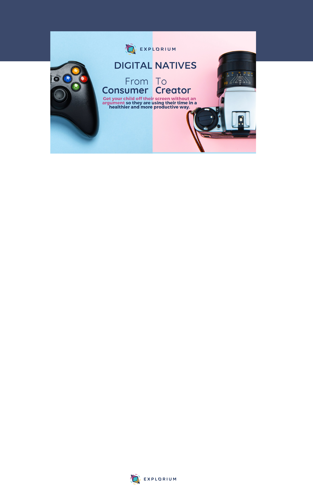

It's time to stop seeing technology or video games as the
problem and start seeing it as your solution to get your child
re-engaging with learning the Lights On® way.
3 steps to transform your child from a consumer to creator.
1) Reframe The Conversation
If your current dialogue around technology is about restricting screen time
or using it as a reward for doing something else (E.G homework!) it's time
to update the conversation with your Digital Native!
You want to shift your focus away from limiting the amount they use
technology towards exciting them about HOW they can use it.
2) Use Technology As A Digital Tool
Technology is very much like the pencil or paint brush of the 21st century
and gives your child plenty of opportunity to create.
The fact they love using technology means they're likely to be very excited
to create their own video games, films and animations and from here you
can start to develop their visual and digital literacy; which are essential
skills for the 21st Century.
3) Cultivating The Habits Of Digital Creation
It's time to give your child back that creative space to explore their
imagination and bring their ideas to life using their digital tools.
A good place to start is to ask them to help YOU create something.This is
where you get to position them as the expert or 'Digital Wizard' and you
start modelling being the learner.
© 2020 Explorium Ltd
explorium.co.uk
info@explorium.co.uk